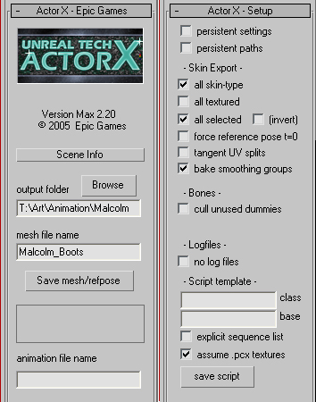
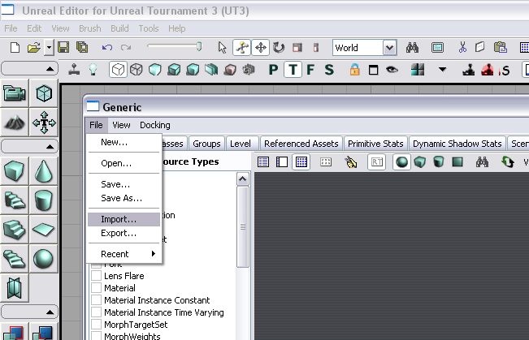
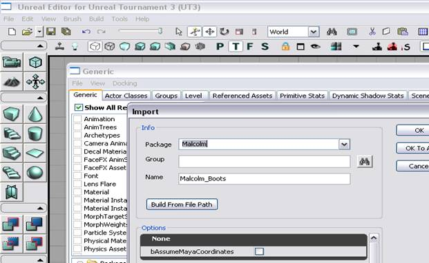

UDN
Search public documentation:
UT3CustomCharactersJP
English Translation
中国翻译
한국어
Interested in the Unreal Engine?
Visit the Unreal Technology site.
Looking for jobs and company info?
Check out the Epic games site.
Questions about support via UDN?
Contact the UDN Staff
中国翻译
한국어
Interested in the Unreal Engine?
Visit the Unreal Technology site.
Looking for jobs and company info?
Check out the Epic games site.
Questions about support via UDN?
Contact the UDN Staff
UT3 のカスタム キャラクター作成
ドキュメント概要 : 3 世代目の Unreal Tournament ゲーム用のカスタム キャラクター作成のガイド。 ドキュメントの変更ログ : Paul Jones? により作成、Chris Mielke と Aaron Herzog によってアップデート。Richard Nalezynski? により管理。概観
このドキュメントは、UT3 Character 骨格や、どのようにしてメッシュ コンテンツをエンジンにインポートし、ゲーム内で実行するように設定するかを解説していきます。骨格
UT3 では、4 つの異なる主要な骨格が使用されます。- human male (人間の男性)
- human female (人間の女性)
- krall (クラル)
- corrupt (コラプト)
- UT3_Male.max (3D Studio Max 9)
- UT3_Female.max (3D Studio Max 9)
- UT3_Krall.max (3D Studio Max 9)
- UT3_Corrupt.max (3D Studio Max 2009)
骨格へのメッシュのウェイト
カスタム メッシュを作成する際には、骨格を考えてメッシュを作成するのが最善です。メッシュは、骨格によって既に定義された場所にマッチしたすべてのジョイントとともにモデルされるべきです。この規則に従わないメッシュに関しては、骨格ジョイントを回転させてメッシュ内でジョイントに並ぶようにすることができます。正確にプレイするには、ゲーム内のアニメーションがボーンをなければならない方向へ戻します。 ボーンは回転しますが、メッシュ内でジョイントのある場所に設置するために、変換したり移動したりしてはいけません。これは、アニメーションがボーン変換がどこになるかを定義するので、ゲーム内での予期しない結果を引き起こしたり、メッシュを潰したり引き伸ばしたりしてしまいます。例えば、骨格によって定義されているよりも短い脚をメッシュが持っていたら、骨格の脚のボーンは補うために移動させられ、ゲーム内で他のキャラクターの脚の長さにマッチさせるために脚は引き伸ばされてしまいます。これは、ゲーム内のキャラクター セットアップ中に、すべてのピースが正確に接続されているように保ちます。メッシュを骨格にフィットさせる正しい方法は、なるべく近くなるように必要に応じてジョイントを回転させる、あるいはメッシュを変更してフィットさせます。異なるプロポーションのキャラクターを作成するには、新しいマスター骨格が必要となり、プロポーションが既に存在するキャラクターのものと非常に異なる場合は、独自のアニメーションが必要になる場合もあります。これは、このドキュメントの範囲を超えることになるので、ここではふれません。 Malcolm メッシュを考えてみましょう。彼は、キャラクター作成ができるようにピースでモデルされています。ピースは、ゲーム内のキャラクター作成ピースにマッチするように作られています。これらのメッシュ ピースは骨格にウェイトされる用意ができています。- Head (頭)
- Arms (腕)
- Shoulderpads (肩パッド)
- Torso (胴体)
- Thighs (太もも)
- Boots (ブーツ)
 UT3_Male.max ファイルからボーンをマージして、必要でないボーンを削除し、その後メッシュを骨格にウェイトします。この場合、Malcolm にはクロス ボーンが必要ないので、削除することができます。
UT3_Male.max ファイルからボーンをマージして、必要でないボーンを削除し、その後メッシュを骨格にウェイトします。この場合、Malcolm にはクロス ボーンが必要ないので、削除することができます。

エクスポート
次は、キャラクターをエクスポートし、エンジンに入れます。各メッシュ ピースは、別々に独自の骨格メッシュとして ActorX を使用してエクスポートされます。 ActorX プラグインはここからダウンロードしてください : ActorXJP Malcolm のブーツを、メッシュ ピースをエンジンに入れる例として使用します。他のピースに関しても同様のプロセスを使用してください。 Malcolm のブーツをエクスポートするには、まず ActorX をロードします。そして Skin Export 設定が正しいことを確認してください。
all skin-type 設定は、シーン内でウェイトされるメッシュが、確実にエクスポートされるようにします。_all selected_ 設定は、1 回で各ピースを簡単にエクスポートする簡単な方法です。もし、何らかの理由で all selected が動かなかったり、ActorX のバージョンで利用可能でなかったりする場合は、単純にエクスポートしないメッシュを削除してください。しかし、骨格のパーツを削除しないでください。いかなるメッシュをも削除する前に、必ずシーンを保存するようにしましょう。そうすれば、完全なバージョンに戻ることができます。また、メッシュを削除した後にこのファイルを上書きしないようにしましょう。 ActorX 内の output folder と mesh file 名前フィールドに記入し、ブーツ メッシュが選択された状態で、_Save mesh/refpose_ ボタンを押して、骨格アニメーション (.psk) ファイルを作成します。骨格に何らかのアニメーションがある場合は、ActorX はタイムラインの最初のフレーム (通常フレーム 0) をエクスポート ポーズとして使用します。インポート
Generic ブラウザ ウィンドウで、エディタを開き、"file (ファイル)" -> "import (インポート)" を選びます。エクスポートが作成した psk ファイルを探し、"open (開く)" をクリックします。
Open (開く) を選択すると、もう 1 つのウィンドウが開かれ、アニメーション ファイルをどうするかをたずねてきます。このウィンドウの Package (パッケージ) フィールドから、既存のパッケージか、新しいパッケージを作成してそれにインポートすることができます。新しいパッケージを作成するには、既に存在しないパッケージ名をタイプしてください。_OK_ を選択すると、新しいパッケージが作成され、メッシュがインポートされます。既存のパッケージにインポートするには、既存のパッケージ名をタイプするか、ドロップダウン リストから選択します。このウィンドウでは、_Group (グループ)_ フィールドを介して、パッケージの中にグループを作成することも可能ですし、_Name (名前)_ フィールドを介して、メッシュ名を変更することも可能です。
メッシュのインポートが終了したら、パッケージを以下のディレクトリに保存します。\My Documents\My Games\Unreal Tournament 3\UTGame\Unpublished\CookedPC\CustomChars
メッシュにソケットを追加する
ソケットは、骨格メッシュのユーザによって定義されたポイントです。どのような骨格メッシュにでも追加することができ、UT3 では、パーティクルを放射するポイントから武器を接合する場所までさまざまなものに使用されています。ゲーム内でキャラクターが正しく機能するためには、これらは各メッシュに追加される必要があります。ソケットを追加するには、ソケットを追加したい骨格メッシュを Generic ブラウザ ウィンドウでダブルクリックします。骨格メッシュ/アニメーション セット エディタ ウィンドウが開きます。_Socket Manager (ソケット マネージャ)_ アイコンをクリックするか、_Mesh (メッシュ)_ メニューから Socket Manager (ソケット マネージャ) を選択して "Socket Manager (ソケット マネージャ)" ウィンドウを開きます。 "New Socket (新しいソケット)" を選択して、どのボーンにソケットが接合されるかを選び、ソケットの名前を作成することで、ソケットが作成されます。
以下が、必要となるソケットのリストです。
"New Socket (新しいソケット)" を選択して、どのボーンにソケットが接合されるかを選び、ソケットの名前を作成することで、ソケットが作成されます。
以下が、必要となるソケットのリストです。
| Mesh Name (メッシュ名) | Socket Name (ソケット名) | Bone Name (ボーン名) |
| Arm Mesh | WeaponPoint | b_RightWeapon |
| DualWeaponPoint | b_LeftWeapon | |
| Boot Mesh | L_JB | b_LeftAnkle |
| R_JB | b_RightAnkle | |
| Torso Mesh | HeadShotGoreSocket | b_Neck |
ゲーム内でのメッシュ使用の設定
あとは、ゲームに骨格メッシュがどこにあり、どのように使用するかを教えてあげるために、カスタム キャラクターを設定するだけです。これは、構成 (.ini) ファイルを編集することで行います。\My Documents\My Games\Unreal Tournament 3\UTGame\Config\UTCustomChar.iniMalcolm のブーツを UT3 Character Creation (キャラクター作成) メニューに追加するには、構成ファイルに、他に使用するブーツがあることを示すようなラインを追加する必要があります。Malcolm は Iron Guard (アイアン ガード) キャラクタにに似ているので、ピースはフィットするでしょう。構成ファイルをスクロール ダウンして、Boots がある場所を見つけ、さらにどのファミリーにあるか―この場合はアイアンガードのファミリー (IRNM と表示されます)―を絞ります。
Parts=(Part=PART_Boots,ObjectName="CH_IronGuard_Male.Mesh.SK_CH_IronG_Male_Boots01",PartID="A",FamilyID="IRNM") Parts=(Part=PART_Boots,ObjectName="CH_IronGuard_Male.Mesh.SK_CH_IronG_Male_Boots02",PartID="B",FamilyID="IRNM") Parts=(Part=PART_Boots,ObjectName="CH_IronGuard_Male.Mesh.SK_CH_IronG_Male_Boots03",PartID="C",FamilyID="IRNM")Objectname の命名規則は、=Package.Group.Subgroup.Mesh= (各セクションの間にピリオドがあることに気を付けてください) となっています。例えば、新しいメッシュが "Malcolm_Boots" と命名されて、"Malcolm" というパッケージに存在し、グループがなかったら、Objectname は単純に "Malcolm.Malcolm_Boots" となります。 Objectname の命名規則は、Package.Group.Subgroup.Mesh (各セクションの間にピリオドがあることに気を付けてください) となっています。例えば、新しいメッシュが "Malcolm_Boots" と命名されて、"Malcolm" というパッケージに存在し、グループがなかったら、Objectname は単純に "Malcolm.Malcolm_Boots" となります。
Parts=(Part=PART_Boots,ObjectName="Malcolm.Malcolm_Boots",PartID="D",FamilyID="IRNM")構成ファイルを保存し、ゲームを起動します。新しいピースは、UT3 Character Creation (キャラクター作成) メニューに現れるはずです。